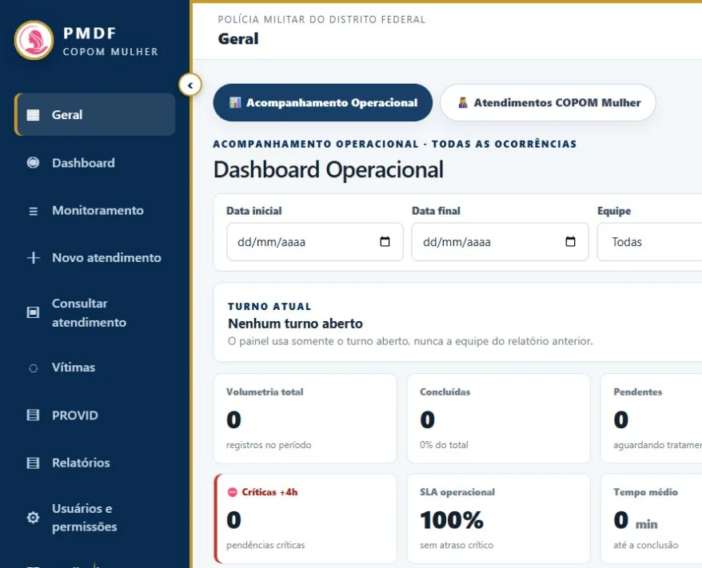

Desenvolvimento Web
Sites e aplicações responsivas, criados com atenção à navegação, performance e experiência de uso.
Crio sistemas de gestão e experiências digitais que simplificam processos, conectam pessoas e ajudam negócios a evoluir.
Sites e aplicações responsivas, criados com atenção à navegação, performance e experiência de uso.
Ferramentas para organizar atendimentos, automatizar rotinas e acompanhar processos com clareza.
Painéis, indicadores e interfaces intuitivas que transformam dados em informações úteis.
Conheça uma das interfaces que desenvolvi: um painel para apoiar a organização de atendimentos, indicadores e encaminhamentos.
Explorar interfaces do projeto ↗
Dois sistemas de gestão e dois catálogos comerciais. Em cada um, o problema vem primeiro e a tecnologia depois.
Reúne fichas de vítimas, histórico de atendimentos e encaminhamentos ao PROVID, com acompanhamento por batalhão.
Histórico e acompanhamento conectados em um único fluxo.
Importa planilhas e verifica pendências de formalização antes de consolidar os relatórios.
O fechamento considera os registros que ainda precisam ser completados.
O visitante escolhe o presente e inicia o atendimento no WhatsApp com o item selecionado.
Da escolha do produto à conversa com a equipe, com contexto.
Busca e filtros por categoria levam à consulta de preço e disponibilidade com a distribuidora.
Produtos organizados para facilitar a escolha e o contato.
COPOM MULHER e Monitoramento de Ocorrências são projetos do mesmo contexto, apresentados conforme seus repositórios distintos. As capturas não incluem dados de atendimentos. A prévia de Monitoramento é conceitual.
Uma seleção de telas reais. Amplie para explorar os detalhes de cada projeto.
Painel, cadastro por etapas e acompanhamento PROVID. Aplicação executada localmente a partir do código, com banco vazio.
Da apresentação da marca à escolha do presente e ao início do pedido.
Identidade visual, destaques e catálogo organizado por categoria.
Capturas de outubro de 2026. Conteúdo e disponibilidade dos sites comerciais podem mudar.
Sou formado em Análise e Desenvolvimento de Sistemas pela Universidade Cruzeiro do Sul e atuo como Assessor Técnico no COPOM/PMDF, com dados operacionais, indicadores e relatórios. Essa experiência, somada ao atendimento ao cliente e às rotinas administrativas, me ajuda a entender os processos e desenvolver soluções que fazem sentido para quem usa.
Baixar currículo em PDF ↓2024 — atual · Assessor Técnico
COPOM / Polícia Militar do Distrito Federal. Análise de dados operacionais, indicadores, planilhas, relatórios e apoio à organização de processos.
2022 — 2023 · Telemarketing ativo (estágio)
Claro. Atendimento, suporte técnico e administrativo, negociação e pesquisas de satisfação.
2014 — 2016 · Auxiliar administrativo (estágio)
Jovem Candango. Organização de arquivos e controle documental.
Análise e Desenvolvimento de Sistemas
Universidade Cruzeiro do Sul · 2022 — 2024 · Concluído.
Conte como funciona sua rotina e o que você quer melhorar. Vamos pensar em uma solução para o seu negócio.